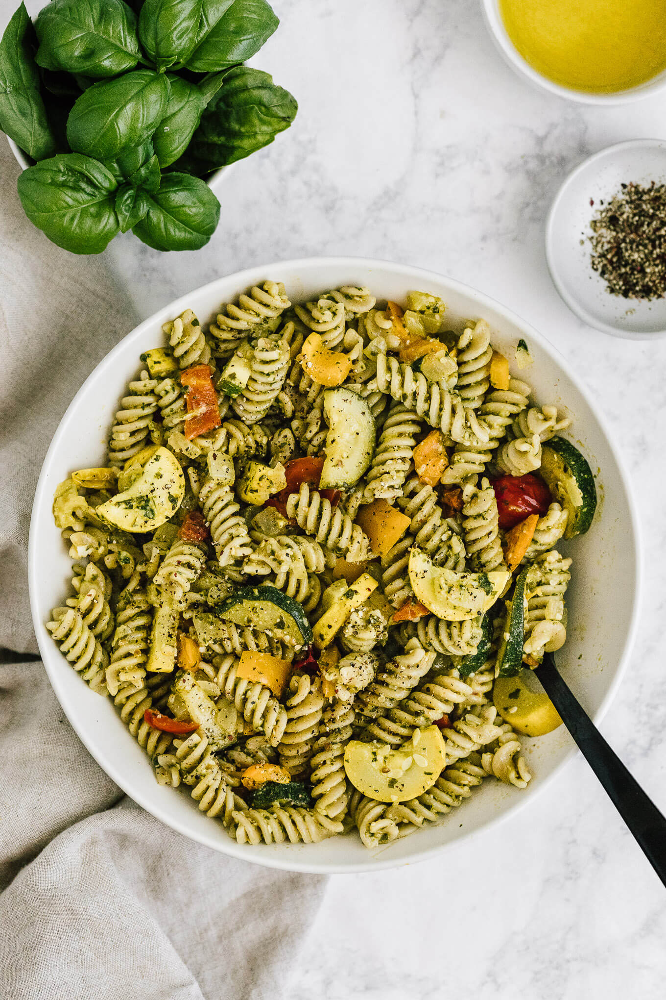

Pesto Pasta

I's easy to feel down, but better to cheddar up with
a delicious answer to the day. Try some Pesto Pasta!
Follow the recipe for a delicious time.
As well, please care for following the directions at
heart. For best results, cook with enthusasim.
Ingredients
- ½ cup chopped onion
- 2½ tablespoons pesto
- 2 tablespoons olive oil
- 2 tablespoons grated Parmesan cheese
- 1 (16 ounce) package pasta
- salt and ground black pepper to taste
Instructions
- Cook pasta in a large pot of boiling water until done. Drain.
-
Meanwhile, heat the oil in a frying pan over medium low heat. Add pesto, onion, and salt and
pepper. Cook about five minutes, or until onions are soft
- In a large bowl, mix pesto mixture into pasta. Stir in grated cheese. Serve.